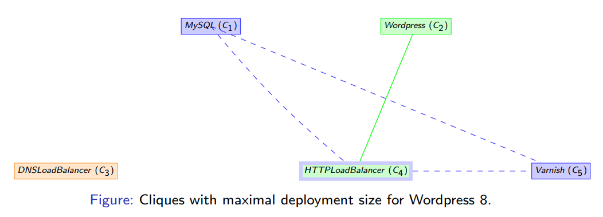

This work is licensed under a Creative Commons Attribution 4.0 International License.
This work is licensed under a Creative Commons Attribution 4.0 International License. The table below shows the average runtime required to solve a problem for a given amount of Wordpress instances and a number of virtual machine offers. In our testing, we used two solvers: Chuffed and Google OR-Tools; and we ran the tests with a 40 minute timeout limit.
| Number of Wordpress Instances | Number of VM Offers | Chuffed | OR-Tools |
|---|---|---|---|
| 3 | 20 | 2.09s | 3.51s |
| 3 | 40 | 3.85s | 8.40s |
| 3 | 250 | 52.00s | 96.19s |
| 3 | 500 | 461.84s | 191.21s |
| 4 | 20 | 25.85s | 23.27s |
| 4 | 40 | 116.69s | 56.27s |
| 4 | 250 | 1956.60s | 502.89s |
| 4 | 500 | - | 989.54s |
| 5 | 20 | 601.39s | 150.28s |
| 5 | 40 | 2310.67s | 426.10s |
| 6 | 20 | - | 494.06s |
| 6 | 40 | - | 1175.98s |
This table shows that the two solvers do not scale well for a high number of Wordpress instances. Therefore the reduction of the searching space becomes a priority. This can be done by using symmetry breaking techniques, in particular static symmetry breaking. They imply the addition of constraints, aiming to reduce the number of symmetrical solutions (in our case, two solutions are considered symmetrical if the total leasing price is the same, but they have different assignment matrices).
One such symmetry breaker is the Fixed Value (FV). Given all the components and the list of conflicts, a conflict graph can be built, using components as vertices and conflicts between them as edges (as seen in the figure below). Based on this graph we can determine a clique with maximum deployment size in which all components are pairwise conflictual, hence cannot be placed on the same virtual machine. Using this clique we can allocate those components (in the figure below MySQL, HTTP_LoadBalancer and Varnish) to consecutive virtual machines, one instance per machine.

However, caution must be taken when combining multiple symmetry breakers. For instance, when combining Fixed Value (FV) with Load (L) and the Lexicographic (LX) symmetry breakers, the latter two shall not act on the machines used by the FV technique. So the FVLLX tehnique goes as follows: - Set the components in the clique to the first K virtual machines, where K is the total number of component instances (FV) - Starting with the (K+1)th VM, all virtual machines must be sorted by their load (e.g. a machine holding 3 components comes before a machine holding 4 components) (L) - Starting with the (K+1)th VM, if two virtual machines have the same load, they must be in lexicographic order. (LX)
After testing all the possible symmetry breaker combinations, we discovered that the best symmetry breaker for the Wordpress problem, is different based on the solver, as follows:
| Solver | Best Symmetry Breaker |
|---|---|
| Chuffed | FVLLX |
| OR-Tools | LX |
This work is licensed under a Creative Commons Attribution 4.0 International License.